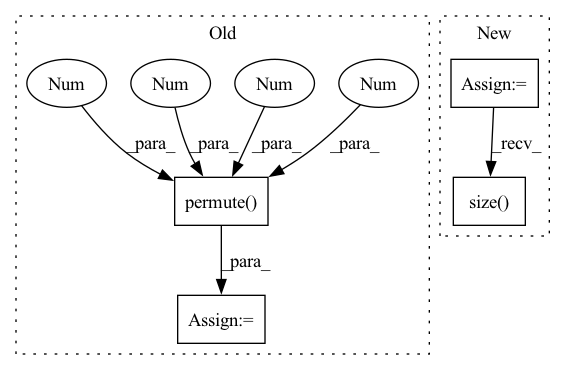

Pattern ID :16538
Before Change
if not self.batch_first:
// (t, b, c, h, w) -> (b, t, c, h, w)
input_tensor = input_tensor.permute(1 , 0 , 2 , 3, 4 )
b, _, _, h, w = input_tensor.size()
// Implement stateful ConvLSTM
if hidden_state is not None:
raise NotImplementedError()
else:
// Since the init is done in forward. Can send image size here
hidden_state = self._init_hidden(batch_size=b, image_size=(h, w))
layer_output_list = []
last_state_list = []
seq_len = input_tensor.size(1)
cur_layer_input = input_tensor
for layer_idx in range(self.num_layers):After Change
-------
last_state_list, layer_output
cur_layer_input = torch.unbind(input, dim=int(self.batch_first))
if not hidden_state:
hidden_state = self.get_init_states(cur_layer_input[0].size( int(not self.batch_first)) )
seq_len = len(cur_layer_input)
In pattern: SUPERPATTERN
Frequency: 3
Non-data size: 4
Instances Fragment ID: 55670097
Project Name: openclimatefix/metnet
Commit Name: 12d0ea12a39fb28fca3d382611857f23f060b5b6
Time: 2022-02-01
Author: jacob@bieker.tech
File Name: metnet/layers/ConvLSTM.py
M Class Name: ConvLSTM
N Class Name: ConvLSTM
M Method Name: forward(3)
N Method Name: forward(3)
M Parent Class: nn.Module
N Parent Class: nn.Module
M File Name: metnet/layers/ConvLSTM.py
N File Name: metnet/layers/ConvLSTM.py
M Start Line: 149
M End Line: 188
N Start Line: 160
N End Line: 182
Before Change
log_p = self.prod(log_p)
// Shift repetition dimension to build sum over repetitions
log_p = log_p.permute(0 , 1 , 3 , 2 )
log_p = self.root(log_p)
log_p = log_p.view(x.shape[0])
return log_p
After Change
x = self._randomize(x)
// Apply leaf distributions (replace marginalization indicators with 0.0 first)
x = self._leaf(x)
// Pass through intermediate layers
x = self._forward_layers(x)
// Merge results from the different repetitions into the channel dimension
batch_size, features, channels, repetitions = x.size()
assert features == 1 // number of features should be 1 at this point
assert channels == 1 // number of channels should be 1 at this point
x = x.view(batch_size, 1, repetitions, 1)
Fragment ID: 55670033
Project Name: braun-steven/simple-einet
Commit Name: 59ae9b6a6e2fc6413d999439cb40ed0407d79edb
Time: 2021-11-15
Author: steven.lang.mz@gmail.com
File Name: einet.py
M Class Name: Einet
N Class Name: Einet
M Method Name: forward(2)
N Method Name: forward(2)
M Parent Class: nn.Module
N Parent Class: nn.Module
M File Name: einet.py
N File Name: einet.py
M Start Line: 97
M End Line: 113
N Start Line: 169
N End Line: 192
Before Change
// VERSION conv -----
x = x[:, 1:, :]
x = x.reshape(x.shape[0], self.patch_h, self.patch_w, x.shape[-1]) // (B, h, w, chns)
x = x.permute(0 , 3 , 1 , 2 ) .contiguous() // (B, chns, h, w)
// print("before pred size", x.size())
x = self.decoder_pred(x)
// patchify back to accomodateAfter Change
latent = self.decompressor(latent)
// // embed tokens
latent = self.decoder_embed(latent)
restored_latent = self.unmasking_handle(latent, mask, ids_restore)
restored_latent = restored_latent.reshape(restored_latent.size( 0) , self.patch_h*self.patch_w, -1)
// x = torch.cat([latent_cls, restored_latent], dim=1)
// add pos embed Fragment ID: 55670101
Project Name: coperception/star
Commit Name: 731f6b1da07455be85cd59f6a8f6e795d902aa7a
Time: 2022-06-04
Author: 954742885@qq.com
File Name: coperception/models/transformers/multiagent_mae.py
M Class Name: AmortizedIndivMMAEViT
N Class Name: AmortizedIndivMMAEViT
M Method Name: forward_decoder(4)
N Method Name: forward_decoder(2)
M Parent Class: MultiAgentMaskedAutoencoderViT
N Parent Class: MultiAgentMaskedAutoencoderViT
M File Name: coperception/models/transformers/multiagent_mae.py
N File Name: coperception/models/transformers/multiagent_mae.py
M Start Line: 874
M End Line: 888
N Start Line: 902
N End Line: 915